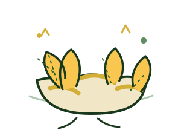
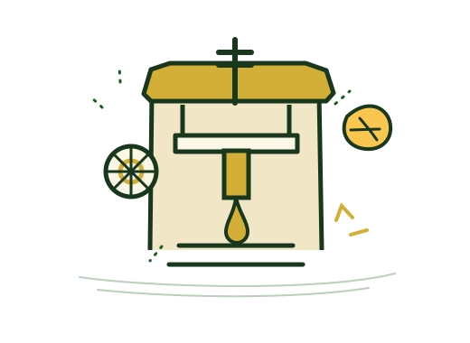
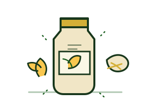
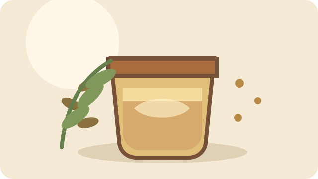
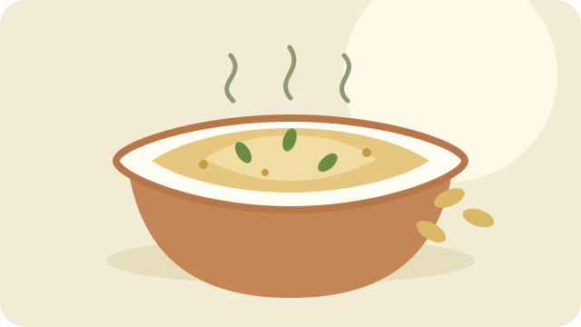
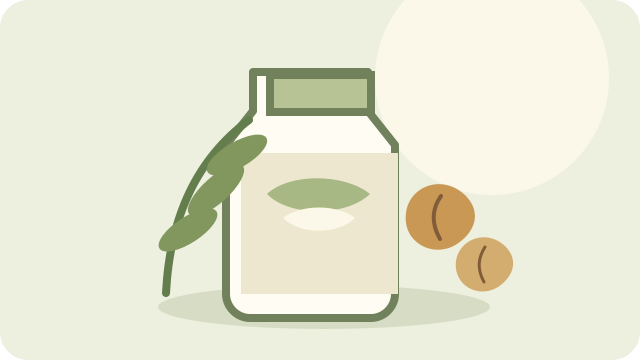
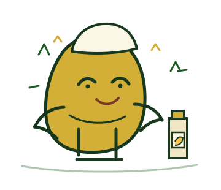

01

СЫРЬЁ
Начинаем с основы
У каждого масла свой характер — и начинается он с семян, орехов или другого растительного сырья.
ЗАКУЛИСЬЕ DR. DARSUN
Масло, урбеч, хумус и растительные напитки начинаются с разного сырья и требуют разных способов приготовления. Показываем, чем они отличаются.
Посмотреть этапы
Небольшая честная пометка. Рисунки на этой странице — авторские эскизы, а не снимки нашего цеха. Карточки новых продуктов объясняют общие способы приготовления: конкретная рецептура, состав и фактический ассортимент зависят от продукта и должны быть указаны на его маркировке.
ТРИ ПРОСТЫХ ШАГА
Для разных продуктов маршрут свой: эти три шага ниже показывают именно путь растительного масла.

СЫРЬЁ
У каждого масла свой характер — и начинается он с семян, орехов или другого растительного сырья.
ОТЖИМ
В основе нашего подхода — холодный отжим. Никаких обещаний «чудес»: только понятный способ получения продукта.

ГОТОВЫЙ ПРОДУКТ
Масло разливают по бутылкам и готовят к заказу. На сайте можно посмотреть доступные позиции и условия доставки.
НЕ ТОЛЬКО ОТЖИМ
Это общие принципы приготовления, а не обещание конкретной рецептуры или наличия в продаже. Точный состав всегда сверяйте с этикеткой товара.

УРБЕЧ
Сырьё очищают и измельчают до густой массы. При помоле из семян и орехов выделяются собственные масла, поэтому консистенция зависит от основы и степени измельчения. Добавки — только если они указаны в составе.

ХУМУС
Нут обычно замачивают и отваривают до мягкости, затем измельчают. Тахини, масло, лимон и специи могут дополнять рецепт, но состав у разных вариантов отличается; кунжут и другие ингредиенты проверяйте по маркировке.

РАСТИТЕЛЬНЫЙ НАПИТОК
Орехи, семена или злаки измельчают и смешивают с водой; напиток могут фильтровать, термически обрабатывать и дополнять ингредиентами. Доля сырья, добавки и условия хранения зависят от конкретной технологии.

СДЕЛАНО С ВНИМАНИЕМ
Мы хотим показывать производство таким, какое оно есть. Поэтому пока делимся эскизами, а не выдаём иллюстрации за документальные фотографии.
Когда появятся проверенные кадры и подробности о конкретных этапах, их можно будет добавить сюда — с пояснениями и без лишнего глянца.
Посмотреть каталог продуктовПРОДОЛЖИМ ЗНАКОМСТВО?
В каталоге — актуальные позиции и подробности о каждом товаре.